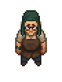

Adam
| Adam | |
|---|---|
 | |
Basic Information
| |
Location :
|
The Village |
Role :
|
Potter |
Trade Information
| |
Type of Goods :
|
pottery products |

Adam is an NPC vendor of the The Village. He is found south west of The Dead Horse, selling pottery products. There are two
clay pits next to his house, neither of which can be utilized by the player.
Trading
Selling
|
|
|
Purchasing
This vendor does not purchase any craftables. Strangely, Adam also does not purchase the commercial blessing. This is typical for vendors who have all tiers already unlocked, like Clotho, but Adam requires you to unlock the other tiers first.
| Item | Tier | Base Price |
|---|---|---|
| N/A | ||
Stranger Sins
Quests
Clay Shards
Adam holds the
Clay Shards artifact. To get it from him he asks you to do 2 things for him.
First he'll ask you to upgrade your Tavern to 40 quality, which requires 30
Wooden plank, 30
A piece of stone and 12
Simple iron parts for an upgrade. You'll need to add 2 tables (8
Wooden plank and 8
Nails each) to the new spots that become available as well as have all previous artifacts on display to reach 40 tavern quality.
Secondly he'll ask you to help him with voices that bully him at night that leave no footprints. To deal with this return to his house after midnight and find Yorick outside. After a chat Yorick agrees to leave Adam alone. Return in the morning and talk to Adam to receive the
Clay Shards and +20 reputation with Adam.
Ancient Keys
Adam has the
Ancient Keys in his house. Before you can enter his house you need to show him your interest in art and bring him 3
Porcelain pitcher. He won't be impressed and will offer you 5 silver or you can choose to keep your
Porcelain pitcher. Next you can talk to the Merchant to obtain 3 rare vases but he's sold them already to the Beekeeper. The Beekeeper seems to believe Adam is his arch nemesis and you conspire to fill the vases with poison which was stolen from the Beekeeper by Dig. Talk to Dig and answer anything to his riddle to get the right "Poison Cake" answer. Take the
Cake with bee poison to the Beekeeper to receive the
Vases of poison to bring to Adam. This will gain you another +20 reputation with him allowing you to enter his home and grab the
Ancient Keys from his chest by his bed. The chest also contains 3 Porcelain pitcher, 5 Ceramic jug, 3 Red jelly, Beet slices, 2 Bottle of berry juice, 20 Ceramic bowls and a Rusty hammer.
| |||||||||||||||||||||||||||||